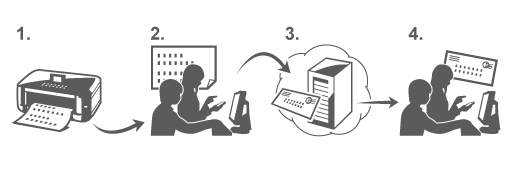

Imprimir desde e-mail le permite imprimir fácilmente los archivos adjuntos. Solo tiene que adjuntar una imagen o un documento del ordenador o smartphone y enviar el mensaje de correo electrónico con el archivo adjunto.
Puede imprimir fácilmente desde otros lugares, por ejemplo el lugar de destino al que va. Asimismo, sus familiares o amigos también pueden imprimir si se han registrado previamente en este servicio.
Puede usar Imprimir desde e-mail en cualquier impresora Canon que admita el servicio.

Comprobación del entorno
Primero, compruebe su entorno de trabajo.
-
Entorno de red
Este producto tiene que estar conectado a una red LAN con conexión a Internet.
 Importante
Importante-
Los gastos del servicio de acceso a Internet corren a cargo del usuario.
-
Esta función podría no estar disponible en algunos países o regiones.
-
Versión del software (firmware) de la impresora
Si la versión del firmware de la impresora es anterior a la versión 2.000, será necesario actualizar el firmware.
Para obtener las instrucciones paso a paso del proceso de actualización, consulte "Procedimiento de actualización".
Pasos previos para usar el servicio Imprimir desde e-mail
Para usar Imprimir desde e-mail, deberá registrar la impresora indicando los datos del propietario de esa impresora en particular.
-
Imprima la dirección URL de la página de registro de la impresora y el código PIN
-
Acceda a la URL e introduzca la dirección de e-mail del propietario y cualquier otra información requerida
-
Compruebe si ha recibido el mensaje de correo electrónico enviado a la dirección de e-mail indicada
-
Acceda a la URL incluida en el mensaje de correo electrónico y lleve a cabo el proceso de registro de la impresora
 Nota
Nota-
La dirección de e-mail que aparece en la pantalla al acabar el proceso de registro será la única dirección que se utilizará para la función Imprimir desde e-mail.
 Para obtener información detallada sobre el procedimiento de registro, consulte aquí
Para obtener información detallada sobre el procedimiento de registro, consulte aquí
Impresión desde el ordenador o un smartphone
-
Prepare el archivo que desee imprimir
A continuación se indican el formato de archivo, el número de archivos y el tamaño de archivo que admite esta función de impresión.
Formatos de archivo compatibles
-
Archivos Adobe PDF
-
Archivos JPEG
Importante-
Sólo se pueden imprimir los archivos adjuntos al mensaje de correo electrónico. El texto del mensaje propiamente dicho no se puede imprimir.
-
No se pueden imprimir los archivos Adobe PDF cifrados, los archivos protegidos por contraseña ni los archivos configurados para que no se puedan imprimir.
-
Si los archivos adjuntos son archivos comprimidos, no se podrán imprimir.
-
No se pueden imprimir archivos que no sean Adobe PDF o JPEG.
Número de archivos y tamaños de archivo admitidos
-
Se pueden imprimir hasta 10 archivos adjuntos.
-
El tamaño máximo de un mensaje de correo electrónico con archivos adjuntos es de 5 MB.
Nota-
El tamaño de un correo electrónico queda determinado por el tamaño del archivo de transmisión completo, incluido el contenido y el encabezado del mensaje de correo electrónico.
Por tanto, hay veces en las que un archivo adjunto no se podrá imprimir aunque el tamaño de dicho archivo adjunto sea inferior a 5 MB. -
Si el tamaño de un archivo JPEG adjunto es inferior a 10 KB, el archivo no se podrá imprimir.
-
-
Adjunte al mensaje de correo electrónico el archivo del PC o smartphone que desea imprimir y envíelo a la dirección de e-mail para imprimirlo
También puede comprobar la dirección de impresión desde el panel de operaciones seleccionando Servicio web → Configuración del servicio web → Config. de la nube → Conf. de Imprimir desde e-mail → Comprobar dirección imprimir.
Importante-
No podrá usar el servicio durante los periodos de mantenimiento del mismo.
-
Uso del servicio con más de una persona
Para permitir que varios usuarios usen esta función, registre a esos usuarios (que no sean el propietario de la impresora) como miembros.
-
El propietario de la impresora usa su PC o smartphone para acceder a la URL de conexión del servicio (https://pr.mp.c-ij.com/po) e inicia una sesión
-
Seleccione el nombre de la impresora que desea agregar al miembro. Haga clic en Configuración de miembros → Agregar para introducir la dirección de e-mail del miembro y haga clic en Registrar
La URL de la página de registro como miembro se envía a la dirección de e-mail del miembro recién registrado.
-
El miembro registrado accede a la URL incluida en el mensaje de correo electrónico y lleva a cabo el proceso de registro
Puede usar este servicio desde las direcciones de e-mail registradas.
Nota-
Puede registrar hasta 500 miembros.
Solución de problemas de Imprimir desde e-mail
Si no puede registrarse en el servicio o eliminar el servicio
El documento no se imprime
Si el documento no se imprime, compruebe lo siguiente:
-
Compruebe que la impresora está encendida.
Si la impresora está encendida, apáguela y vuelva a encenderla; compruebe si el problema se ha solucionado. -
Compruebe que la impresora está conectada a la red.
-
Compruebe que la impresora está conectada a una red LAN y que esa red LAN está conectada a Internet.
-
Mire el panel de operaciones de la impresora y verifique que no muestra ningún mensaje de error.
Si el problema no se ha solucionado, use el controlador de impresora de su ordenador para ejecutar la impresión y compruebe si el documento se puede imprimir con normalidad en la impresora.
Si el documento no se puede imprimir, consulte el manual en pantalla (instrucciones de funcionamiento) que se entrega con la impresora. -
Compruebe si el archivo adjunto al mensaje de correo electrónico es un archivo Adobe PDF o JPEG.
-
Seleccione Servicio web → Configuración del servicio web → Config. de la nube → Conf. de Imprimir desde e-mail → Comprobar dirección imprimir en el panel de operaciones de la impresora y confirme que la dirección de e-mail de destino es correcta.
-
Compruebe si la dirección de e-mail del usuario con la que desea usar el servicio está registrada.
Si desea comprobar los detalles del error, el propietario de la impresora tiene que acceder a la URL de conexión (https://pr.mp.c-ij.com/po). -
En la pantalla Estado de impresión, haga clic en Ir a la pantalla del historial de impresión y consulte el historial de trabajos que se han enviado. Ahora puede comprobar los detalles del error.
Si desea comprobar los detalles del error, el propietario de la impresora tiene que acceder a la URL de conexión (https://pr.mp.c-ij.com/po).
Nota-
Si se trata de una conexión LAN inalámbrica, después de encender la impresora es posible que la comunicación tarde unos minutos en estar disponible. Confirme si la impresora está conectada a la red LAN inalámbrica y vuelva a intentar la impresión.
Si no puede registrarse en el servicio o eliminar el servicio
Si no puede registrarse en el servicio
-
Si el panel de operaciones de la impresora muestra el mensaje "Error al registrarse en "Imprimir desde e-mail", esto quiere decir que el registro en Imprimir desde e-mail podría no haberse realizado aún. Seleccione OK para cerrar el error y vuelva a empezar desde el principio.
-
Compruebe si la versión del firmware de la impresora se ha actualizado.
Si no recibe por correo electrónico la URL para llevar a cabo el registro
-
Es posible que la dirección de e-mail especificado sea incorrecta. Espere unos 30 minutos y accione el panel de operaciones de la impresora para imprimir la URL de registro de la impresora y el código PIN. A continuación, vuelva a realizar el registro desde el principio.
Si no puede eliminar el servicio
-
Si el panel de operaciones de la impresora muestra el mensaje "Error al conectar con "Imprimir desde e-mail". Sólo se ha eliminado la información de esta impresora.", es posible que la información de registro del servicio no se haya podido eliminar aunque la información de Imprimir desde e-mail almacenada en este equipo sí se haya eliminado.
Seleccione OK para cerrar el error y, a continuación, acceda a la URL de conexión del servicio (https://pr.mp.c-ij.com/po) para eliminar la información de registro. -
Si la información de Imprimir desde e-mail almacenada en esta impresora no se pudo eliminar a pesar de haber eliminado la información de registro del servicio, seleccione Servicio web → Configuración del servicio web → Config. de la nube → Conf. de Imprimir desde e-mail → Anulación del registro de impresora(s) registrada(s) y elimine la información de registro.
Si no puede imprimir después de reparar la impresora
Vuelva a registrar la impresora y al propietario de la impresora
-
Cuando se haya reparado la impresora, se elimina toda la información de registro y ya no se puede utilizar Imprimir desde e-mail
Si desea volver a utilizar este servicio, debe volver a registrar la impresora y al propietario de la impresora.
Para obtener información sobre el procedimiento de registro, consulte "Pasos previos para usar el servicio Imprimir desde e-mail".
Aun en el caso de que se hayan registrado como miembros a usuarios que no sean el propietario, repita el registro empezando desde aquí.
Marcas comerciales
-
Windows es una marca comercial o una marca comercial registrada de Microsoft Corporation en Estados Unidos y/u otros países.
-
Windows Vista es una marca comercial o una marca comercial registrada de Microsoft Corporation en Estados Unidos y/u otros países.
-
Mac OS, Bonjour, iPad, iPhone, iPod touch y Safari son marcas comerciales de Apple Inc., registradas en Estados Unidos y otros países. AirPrint y el logotipo de AirPrint son marcas comerciales de Apple Inc.
-
IOS es una marca comercial o una marca comercial registrada de Cisco en Estados Unidos y otros países, y se usa bajo licencia.
-
El resto de los nombres de empresa y nombres de producto mencionados en el presente documento son marcas comerciales o marcas comerciales registradas de sus respectivas empresas.